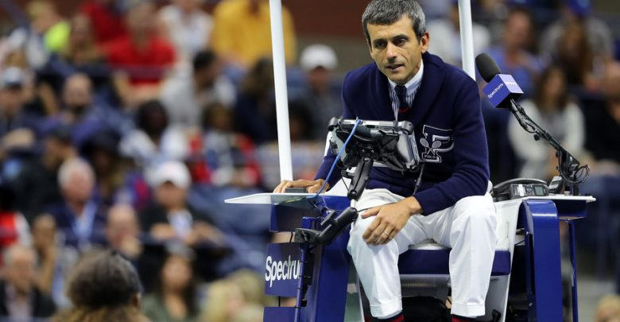
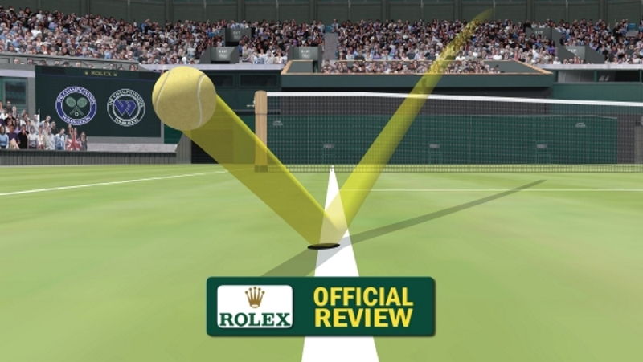
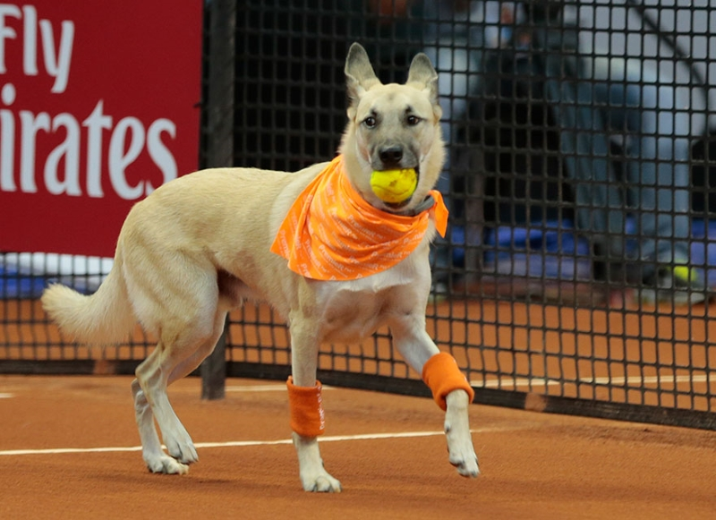
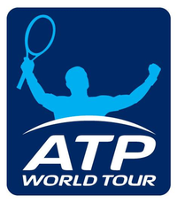

In most professional play and some amateur competition, there is an officiating head judge or chair umpire (usually referred to as the umpire), who sits in a raised chair to one side of the court. The umpire has absolute authority to make factual determinations. The umpire may be assisted by line judges, who determine whether the ball has landed within the required part of the court and who also call foot faults. There also may be a net judge who determines whether the ball has touched the net during service. The umpire has the right to overrule a line judge or a net judge if the umpire is sure that a clear mistake has been made.
In some tournaments, line judges who would be calling the serve, were assisted by electronic sensors that beeped to indicate the serve was out. This system was called "Cyclops". Cyclops has since largely been replaced by the Hawk-Eye system. In professional tournaments using this system, players are allowed three unsuccessful appeals per set, plus one additional appeal in the tie-break to challenge close line calls by means of an electronic review. The US Open, Miami Masters, US Open Series, and World Team Tennis started using this challenge system in 2006 and the Australian Open and Wimbledon introduced the system in 2007. In clay-court matches, such as at the French Open, a call may be questioned by reference to the mark left by the ball's impact on the court surface.
The referee, who is usually located off the court, is the final authority about tennis rules. When called to the court by a player or team captain, the referee may overrule the umpire's decision if the tennis rules were violated (question of law) but may not change the umpire's decision on a question of fact. If, however, the referee is on the court during play, the referee may overrule the umpire's decision (This would only happen in Davis Cup or Fed Cup matches, not at the World Group level, when a chair umpire from a non-neutral country is in the chair).
Ball boys and girls may be employed to retrieve balls, pass them to the players, and hand players their towels. They have no adjudicative role. In rare events (e.g., if they are hurt or if they have caused a hindrance), the umpire may ask them for a statement of what actually happened. The umpire may consider their statements when making a decision. In some leagues, especially junior leagues, players make their own calls, trusting each other to be honest. This is the case for many school and university level matches. The referee or referee's assistant, however, can be called on court at a player's request, and the referee or assistant may change a player's call. In unofficiated matches, a ball is out only if the player entitled to make the call is sure that the ball is out.
The Association of Tennis Professionals (ATP) was formed in September 1972 by Donald Dell, Jack Kramer, and Cliff Drysdale to protect the interests of male professional tennis players. Drysdale became the first President. Since 1990, the association has organized the worldwide tennis tour for men and linked the title of the tour with the organization's name. It is the governing body of men's professional tennis. In 1990 the organization was called the ATP Tour, which was renamed in 2001 as just ATP and the tour being called ATP Tour. In 2009 the name was changed again and is now known as the ATP World Tour, but will change to the ATP Tour by 2019. It is an evolution of the tour competitions previously known as Grand Prix tennis tournaments and World Championship Tennis (WCT).
The ATP's global headquarters are in London, United Kingdom. ATP Americas is based in Ponte Vedra Beach, United States; ATP Europe is headquartered in Monaco; and ATP International, which covers Africa, Asia and Australasia, is based in Sydney, Australia.
The Women's Tennis Association (WTA), founded in 1973 by Billie Jean King, is the principal organising body of women's professional tennis. It governs the WTA Tour which is the worldwide professional tennis tour for women and was founded to create a better future for women's tennis. Its counterpart organisation in the men's professional game is the Association of Tennis Professionals (ATP). The WTA's corporate headquarters is in St. Petersburg, Florida, with its European headquarters in London and its Asia-Pacific headquarters in Beijing.
The Women's Tennis Association was founded in the month of June 1973, but traces its origins to the inaugural Virginia Slims tournament, arranged by Gladys Heldman, sponsored by Joe Cullman, CEO of Philip Morris, and held on 23 September 1970 at the Houston Racquet Club in Houston, Texas. Rosie Casals won this first event.
When the Women's Tennis Association was founded, Billie Jean King was one of nine players that comprised the WTA, also referred to as the Original 9, that included Julie Heldman, Valerie Ziegenfuss, Judy Dalton, Kristy Pigeon, Peaches Bartkowicz, Kerry Melville Reid, Nancy Richey, and Rosie Casals. Today, the WTA has more than 2,500 players from nearly 100 countries competing for $146 million in prize money.
The 2018 WTA competitive season includes 54 events, including the WTA Premier tournaments (Premier Mandatory, Premier 5, and regular Premier), the WTA International tournaments, the Fed Cup (organised by the ITF), the year-end championships (the WTA Tour Championships and the WTA Elite Trophy), and four Grand Slams (supervised by the International Tennis Federation (ITF). These events take place in 30 countries. The season concludes with the BNP Paribas WTA Finals Singapore from 21–28 October and the WTA Elite Trophy in Zuhai, China from 30 October – 4 November. Also included in the 2018 calendar is the Hopman Cup, which is also organised by the ITF and does not distribute ranking points.